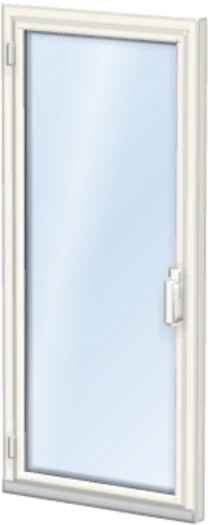
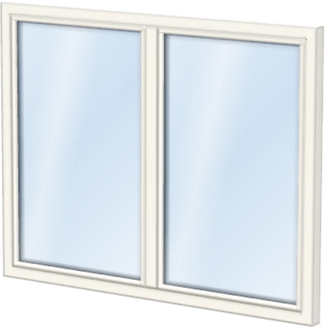
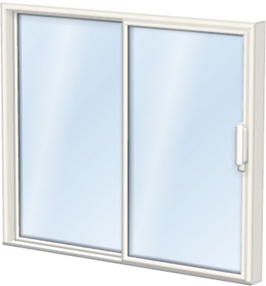
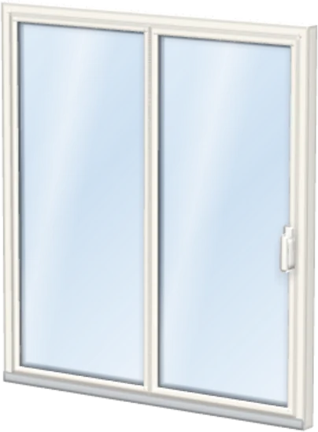
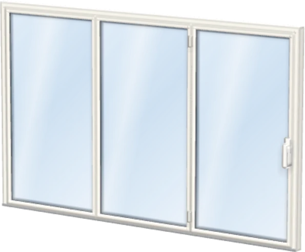

<title>Konfigurator: Start in Violett</title>
<meta name="claude:viewport-fit-sides" content="cover">
<style>html,body{background:#07090a}</style>
<link rel="preload" href="fonts/outfit.woff2" as="font" type="font/woff2" crossorigin>
<link rel="preload" href="fonts/inter.woff2" as="font" type="font/woff2" crossorigin>
<link rel="preload" href="bilder/fenster.webp" as="image" type="image/webp">
<script>document.documentElement.classList.add("ez-js");</script>
<link rel="stylesheet" href="dna/tokens.css">
<link rel="stylesheet" href="dna/bundle.css">
<link rel="stylesheet" href="start.css">
<!--
  Vorschau: Schritt 1 von 6 „Was planst du?“ des Konfigurators (web/app/, SCREENS.start in app.js) nach der Design-DNA,
  Palette „Task-App dunkel“, App-Rahmen aus design-dna Abschnitt 9. Texte sind die der App (OPT.art, ST_NAME, GLOSS.elementart,
  Hinweis zur neuen Öffnung). Am Telefon ist die Seite die Folie selbst; ab 760 px liegt das Telefon als Gerät auf der Bühne,
  daneben die Notizspalte für den Inhaber. Klassen mit Präfix ez-, die dna-Klassen bleiben unverändert.
-->

<main class="dna-wurzel ez" data-theme="dunkel" lang="de">
  <div class="ez-seite">
    <div class="ez-buehne-geraet">
      <div class="ez-geraet">
        <div class="ez-schirm">

          <!-- Die Folie. Gene: G4 das Element als Objekt auf der Bühne, G12 es ragt über die Bühnenkante, G2 violettes Leuchten als
               Zustand „gewählt“, G5 Maßstab am Boden und Stationen-Band, G9 Name und Art als Etikett an der Sache, G13 runde Knöpfe,
               G1 gestrichelter Rahmen heißt „noch nicht da“ (neue Öffnung), G6 eine volle Pille, G14 keine Fläche ist flach -->
          <div class="ez-app" id="app" data-art="fenster" data-situation="ersatz">

            <header class="ez-kopf">
              <div class="ez-kopf__l">
                <button type="button" class="ez-rund ez-rund--kopf" aria-label="Zurück zur Fensterliste"><svg viewBox="0 0 16 16" fill="none" stroke="currentColor" stroke-width="1.8" stroke-linecap="round" stroke-linejoin="round" aria-hidden="true"><path d="M10 3 5 8l5 5"/></svg></button>
                <span class="ez-marke" role="img" aria-label="eeziframes"><svg viewBox="0 0 64 64" aria-hidden="true"><rect width="64" height="64" rx="10" fill="#07090a"/><g fill="#fff"><path d="M26.4 12.2 44.4 19.7 56.3 15.3 42 6.6Z"/><path d="M45 22 57 17.6V41.9L45 39.8Z"/><path d="M44.2 41 55.9 43.3 11.7 64H10A10 10 0 0 1 0 54Z"/></g><rect x=".5" y=".5" width="63" height="63" rx="9.5" fill="none" stroke="#fff" stroke-opacity=".16"/></svg><span class="ez-wm" translate="no" aria-hidden="true"><b>eezi</b>frames</span></span>
              </div>
              <div class="ez-kopf__r">
                <button type="button" class="ez-kopf__knopf"><svg viewBox="0 0 18 18" fill="none" stroke="currentColor" stroke-width="1.8" stroke-linecap="round" aria-hidden="true"><path d="M3 5h12M3 9h12M3 13h12"/></svg><span>Übersicht</span></button>
                <button type="button" class="ez-kopf__knopf ez-kopf__knopf--zeichen" aria-label="Begriffe"><svg viewBox="0 0 18 18" fill="none" stroke="currentColor" stroke-width="1.6" stroke-linejoin="round" aria-hidden="true"><path d="M2.5 3.5h5a1.5 1.5 0 0 1 1.5 1.5v10a1.5 1.5 0 0 0-1.5-1.5h-5zM15.5 3.5h-5A1.5 1.5 0 0 0 9 5v10a1.5 1.5 0 0 1 1.5-1.5h5z"/></svg></button>
              </div>
            </header>

            <nav class="ez-stationen" aria-label="Schritt 1 von 6: Start">
              <b>Start</b>
              <span class="ez-band" aria-hidden="true"><i class="ist"></i><i></i><i></i><i></i><i></i><i></i></span>
              <small aria-hidden="true">1 von 6</small>
            </nav>

            <div class="ez-buehne" id="buehne" tabindex="0" role="group" aria-roledescription="Bühne" aria-label="Gewähltes Element: Fenster. Wischen oder Pfeiltasten wechseln das Element.">
              <div class="ez-buehne__innen" aria-hidden="true">
                <svg class="ez-skala" viewBox="0 0 358 224" preserveAspectRatio="none"><g id="skala"><line class="tick lang" x1="14" y1="190" x2="14" y2="199"/><line class="tick" x1="25" y1="190" x2="25" y2="195"/><line class="tick" x1="36" y1="190" x2="36" y2="195"/><line class="tick" x1="47" y1="190" x2="47" y2="195"/><line class="tick" x1="58" y1="190" x2="58" y2="195"/><line class="tick lang" x1="69" y1="190" x2="69" y2="199"/><line class="tick" x1="80" y1="190" x2="80" y2="195"/><line class="tick" x1="91" y1="190" x2="91" y2="195"/><line class="tick" x1="102" y1="190" x2="102" y2="195"/><line class="tick" x1="113" y1="190" x2="113" y2="195"/><line class="tick lang" x1="124" y1="190" x2="124" y2="199"/><line class="tick" x1="135" y1="190" x2="135" y2="195"/><line class="tick" x1="146" y1="190" x2="146" y2="195"/><line class="tick" x1="157" y1="190" x2="157" y2="195"/><line class="tick" x1="168" y1="190" x2="168" y2="195"/><line class="tick lang" x1="179" y1="190" x2="179" y2="199"/><line class="tick" x1="190" y1="190" x2="190" y2="195"/><line class="tick" x1="201" y1="190" x2="201" y2="195"/><line class="tick" x1="212" y1="190" x2="212" y2="195"/><line class="tick" x1="223" y1="190" x2="223" y2="195"/><line class="tick lang" x1="234" y1="190" x2="234" y2="199"/><line class="tick" x1="245" y1="190" x2="245" y2="195"/><line class="tick" x1="256" y1="190" x2="256" y2="195"/><line class="tick" x1="267" y1="190" x2="267" y2="195"/><line class="tick" x1="278" y1="190" x2="278" y2="195"/><line class="tick lang" x1="289" y1="190" x2="289" y2="199"/><line class="tick" x1="300" y1="190" x2="300" y2="195"/><line class="tick" x1="311" y1="190" x2="311" y2="195"/><line class="tick" x1="322" y1="190" x2="322" y2="195"/><line class="tick" x1="333" y1="190" x2="333" y2="195"/><line class="tick lang" x1="344" y1="190" x2="344" y2="199"/></g><line class="ez-skala__linie" x1="14" y1="190" x2="344" y2="190"/></svg>
                <span class="ez-glut"></span>
                <span class="ez-kontakt"></span>
              </div>
              <div class="ez-held" id="held" aria-hidden="true">
                
                <span class="ez-neu-rahmen" id="neu-rahmen"></span>
              </div>
              <span class="ez-strich" id="strich" aria-hidden="true"></span>
              <div class="ez-etikett" id="etikett">
                <span class="dna-etikett"><span class="dna-etikett__punkt"></span><span class="ez-etikett__text" aria-live="polite"><b id="et-name">Fenster</b><small id="et-sub">Dreh, Kipp, fest</small></span><button type="button" class="ez-i ez-i--etikett" id="was" aria-label="Was ist das?" aria-expanded="false" hidden><svg viewBox="0 0 16 16" fill="currentColor" aria-hidden="true"><circle cx="8" cy="4" r="1.3"/><rect x="7" y="6.5" width="2" height="6.5" rx="1"/></svg></button></span>
              </div>
              <span class="ez-marke-hinweis" aria-hidden="true">Wischen zum Wechseln</span>
              <span class="ez-zaehler" id="zaehler" aria-hidden="true"><i class="ist"></i><i></i><i></i><i></i><i></i><i></i></span>
            </div>

            <div class="ez-frage">
              <div class="ez-frage__kopf">
                <h1>Was <em>planst</em> du?<button type="button" class="ez-i" id="erkl-knopf" aria-label="Welches Element passt zu mir?" aria-expanded="false" aria-controls="erkl"><svg viewBox="0 0 16 16" fill="currentColor" aria-hidden="true"><circle cx="8" cy="4" r="1.3"/><rect x="7" y="6.5" width="2" height="6.5" rx="1"/></svg></button></h1>
                <button type="button" class="dna-pille dna-pille--leise dna-pille--klein ez-notiz"><svg viewBox="0 0 16 16" fill="none" stroke="currentColor" stroke-width="1.6" stroke-linecap="round" stroke-linejoin="round" aria-hidden="true"><path d="M10.5 2.5l3 3L6 13H3v-3z"/></svg>Notiz</button>
              </div>
              <p class="ez-unterzeile">Unsicher? Nimm, was heute eingebaut ist.</p>
              <div class="ez-erkl" id="erkl" hidden>
                <p>Ein Fenster geht auf wie gewohnt, mit Drehen und Kippen. Eine Balkon- oder Terrassentür ebenso, nur bodentief und mit Schwelle. Eine Festverglasung lässt sich nicht öffnen und bringt dafür viel Licht.</p>
                <p>Für große Glasflächen zur Terrasse gibt es Schiebetüren: Die Hebe-Schiebe-Tür ist leichtgängig und dicht, die PSK-Tür schiebt und kippt und ist meist günstiger. Eine Faltschiebewand öffnet fast die ganze Breite.</p>
                <p class="ez-erkl__tipp"><b>Tipp</b> Unsicher? Wähle, was heute eingebaut ist. Dein Fensterbauer zeigt dir im Angebot, welche Alternativen es gibt.</p>
              </div>
            </div>

            <div class="ez-karte" data-theme="hell">
              <div class="ez-feld">
                <div class="ez-feld__kopf"><span class="dna-label" id="art-l">Element antippen</span><span class="ez-feld__wert" id="art-wert">Fenster</span></div>
                <div class="ez-raster" role="group" aria-labelledby="art-l">
                  <button type="button" class="ez-kachel" data-art="fenster" aria-pressed="true"><span>Fenster</span></button>
                  <button type="button" class="ez-kachel" data-art="balkon" aria-pressed="false"><span>Balkontür</span></button>
                  <button type="button" class="ez-kachel" data-art="fest" aria-pressed="false"><span>Festverglasung</span></button>
                  <button type="button" class="ez-kachel" data-art="hst" aria-pressed="false"><span>Hebe-Schiebe</span></button>
                  <button type="button" class="ez-kachel" data-art="psk" aria-pressed="false"><span>PSK-Tür</span></button>
                  <button type="button" class="ez-kachel" data-art="fsw" aria-pressed="false"><span>Faltschiebewand</span></button>
                </div>
                <p class="ez-hilfe ez-was-text" id="was-text" hidden></p>
              </div>
              <div class="ez-feld">
                <div class="ez-feld__kopf"><span class="dna-label" id="sit-l">Die Stelle</span><span class="ez-feld__wert" id="sit-wert">Dort ist schon eins</span></div>
                <div class="ez-schalter" role="group" aria-labelledby="sit-l">
                  <button type="button" data-situation="ersatz" aria-pressed="true"><b>Fenster ersetzen</b><small>Dort ist schon eins</small></button>
                  <button type="button" data-situation="neu" aria-pressed="false"><b>Neue Öffnung</b><small>Dort war noch keins</small></button>
                </div>
                <p class="ez-hilfe ez-neu-hinweis" id="neu-hinweis" hidden><span class="ez-punkt-koralle" aria-hidden="true"></span>Du fotografierst die Wand und ziehst das neue Element auf dem Foto an seinen Platz. Die Maße sind Wunschmaße; Sturz und Statik prüft der Fachbetrieb vor dem Durchbruch.</p>
              </div>
            </div>

            <p class="ez-recht"><a href="#" class="ez-recht__widerruf">Vertrag widerrufen</a><a href="#">Impressum</a><a href="#">Datenschutz</a><a href="#">AGB</a></p>

            <div class="ez-fuss">
              <button type="button" class="ez-rund ez-rund--fuss" aria-label="Zurück"><svg viewBox="0 0 16 16" fill="none" stroke="currentColor" stroke-width="1.8" stroke-linecap="round" stroke-linejoin="round" aria-hidden="true"><path d="M10 3 5 8l5 5"/></svg></button>
              <button type="button" class="dna-pille ez-weiter" id="weiter">Weiter zu den Fotos <span class="dna-pille__pfeil"><svg viewBox="0 0 14 14" fill="none" stroke="currentColor" stroke-width="1.8" stroke-linecap="round" stroke-linejoin="round" aria-hidden="true"><path d="M2 7h10M8 3l4 4-4 4"/></svg></span></button>
            </div>

          </div>
        </div>
        <span class="ez-geraet__glanz" aria-hidden="true"></span>
      </div>
    </div>

    <!-- Notizspalte für den Inhaber (nur ab 760 px neben dem Gerät; am Telefon unter der Folie) -->
    <aside class="ez-notiz" aria-label="Zur Vorschau">
      <span class="dna-label">Konfigurator · Schritt 1 von 6</span>
      <h2>Was planst du? <em>Start in Violett.</em></h2>
      <p class="dna-text">Dieselbe Folie wie in der App, Zeile für Zeile nach dem App-Rahmen der Design-DNA: Kopf, Stationen-Band, Bühne, Frage, Karte, Fuß. Tippen, wischen und Pfeiltasten wechseln das Element; „Weiter“ ist in der Vorschau ohne Ziel.</p>
      <ul class="ez-liste">
        <li><span class="nr">01</span><span><b>Das Element als Objekt.</b> Rendering aus dem 3-D-Modell der App auf einer Anthrazit-Bühne mit Lichtkante und Lichtteich; es steht auf dem Maßstab und ragt über die Bühnenkante. <span class="ez-gen">G4</span><span class="ez-gen">G12</span><span class="ez-gen">G5</span></span></li>
        <li><span class="nr">02</span><span><b>Violett heißt gewählt.</b> Das Leuchten am Boden folgt dem Element, die gewählte Kachel und der Punkt im Zähler sind violett; Koralle nur für den Hinweis. <span class="ez-gen">G2</span></span></li>
        <li><span class="nr">03</span><span><b>Name an der Sache.</b> Das Etikett sagt, was gewählt ist, mit der Kurzbeschreibung der App und „Was ist das?“, wo die App einen Begriff erklärt. <span class="ez-gen">G9</span><span class="ez-gen">G13</span></span></li>
        <li><span class="nr">04</span><span><b>Sechs Kacheln mit Renderings</b> statt kleiner Strichzeichnungen, dazu die Stelle als Schalter mit zwei Zeilen; beides auf einer weißen Karte im ersten Bildschirm.</span></li>
        <li><span class="nr">05</span><span><b>„Weiter zu den Fotos“ bleibt sichtbar.</b> Eine volle Pille mit Pfeilkreis, am Telefon unten stehend, links der runde Rückweg. <span class="ez-gen">G6</span></span></li>
        <li><span class="nr">06</span><span><b>Neue Öffnung</b> zeichnet einen gestrichelten Rahmen um das Element: noch nicht da. <span class="ez-gen">G1</span></span></li>
      </ul>
      <p class="ez-klein">Bewegung nur als Rückmeldung und Zustand: Wechsel des Elements 220 ms, Kacheln 320 ms, Druck 0,97; bei „weniger Bewegung“ steht alles sofort.</p>
    </aside>
  </div>
</main>

<script src="dna/bundle.js"></script>
<script src="start.js"></script>
